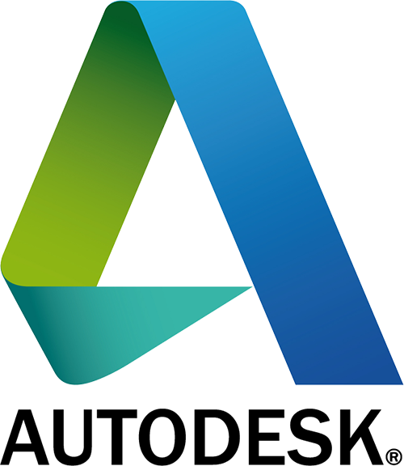
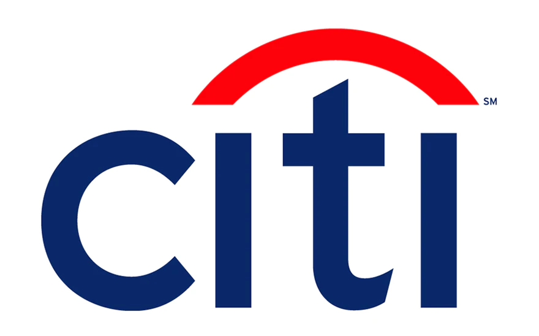

Oracle: Data Science
Learn about Data Science a.k.a the 'sexiest job of the 21st century' as described by Harvard Business Review in this 2-day Workshop. The Workshop will entail various concepts involved in Data Analysis, Data Mining right from the basics. The Workshop will use Oracle's indigenous software platform for the entire Workshop.
February 1 2020 - February 2 2020
Microsoft: Cloud Computing using Azure
Get introduced to the world of Cloud Computing using Microsoft's very own Azure platform. Azure is the leading cloud service provider to several Fortune 500 companies. Learn about cloud services, various models and its applications in the fields of Networking, AI, IoT and many more.
February 1 2020 - February 2 2020
Autodesk: Design using Inventor and Fusion 360

Learn about CAD Modelling and its various aspects and applications using AutoDesk's most famous platform after AutoCAD: Inventor and Fusion 360. Because of its enormous economic importance, CAD(Computer-aided design) has been a major driving force in computer graphics (both hardware and software). As a part of the Workshop, each participant gets a 3-month license of Inventor and Fusion 360.
February 1 2020 - February 2 2020
Texas Instruments: Internet of Things and Industrial Automation
Learn about Industrial Automation and how Industry 4.0 is changing the economy and ushering in a new era of Revolution with the Internet of Things at the forefront. The Workshop will be an intensive session divided into 2 halves spread across 2 days, both having Automation and IoT as their central topics.
January 31 2020 - February 1 2020
Amazon Alexa: Building Engaging Voice Experiences

Learn how to build compelling voice experiences for Alexa, the service that powers millions of devices, including Amazon Echo. The Workshop will cover an introduction to Alexa and in-depth training on how to build voice experiences with the Alexa Skills Kit (ASK), a collection of self-service APIs, tools, documentation and code samples that make it fast and easy to add skills to Alexa. It will also teach about how to publish your skill to the India Alexa Skills Store.
January 31 2020
Citi: Investment Banking and Wealth Management

In an environment rife with concerns about increasing prices and economic slowdown, it has become imperative to plan and manage investments with utmost care. This workshop introduces the concept of Wealth Management and further explains about Investment Banking and what the leading companies like CitiBank actually do in that field.
January 31 2020